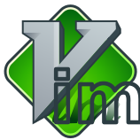

{{page.title}}
Download editors, IDE plugins, command-line tools, and more

Download editors, IDE plugins, command-line tools, and more
The Dart download has everything you need to edit, run, and debug Dart apps. Dart Editor, Dartium, and the SDK tools work in recent versions of {% include os-choices.html %} The Dart development tools do not support Windows XP.
We recommend starting with Dart Editor. It's included in the Dart download, and it works well with all the Dart tools.
| Dart Editor |
Alternatively, you can use Dart plugins for other editors and IDEs:
| IntelliJ IDEA and WebStorm | |
| Eclipse | |
| |
Emacs |
| Sublime Text 2 | |
|  | Vim |
You might need the following downloads if you use an alternate editor or IDE, or if you'd like to read API docs offline.
Get pointers for using Dart tools during your development process.